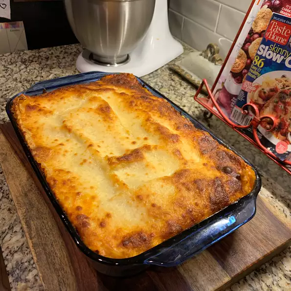

Lasagna

Description
Good for people who aren't reluctant to try tofu. After this lasagna you and your guests will love it!
Ingredients
- 1 box lasagna noodles (16 oz)
- 6 cups meat sauce
- 16 oz. ricotta
- 16 oz. shredded mozzarella
Steps
- Prepare lasagna noodles according to package directions.
- Preheat oven to 375. Spray two 9x13 pans with non-stick cooking spray.
- Mix 3 cups of meat sauce with the ricotta cheese. Season to taste.
- Place 1/2 cup of sauce in 9x13 dish.
- Lay 3 lasagna noodles side-by-side in the dish. Spread some of the ricotta mixture over the noodles and top with mozzarella cheese.
- Repeat and top the 4th layer with cheese.
- Repeat the procedure for the second lasagna.
- At this point, you can tightly wrap the dishes with foil and freeze or bake.
- Bake uncovered for 30 minures.
- If frozen, bake covered for 45 minutes and uncovered for 15 minutes.